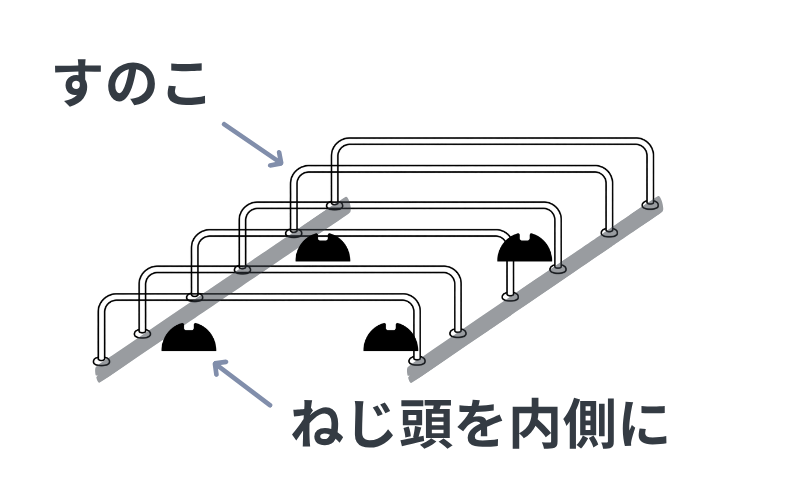
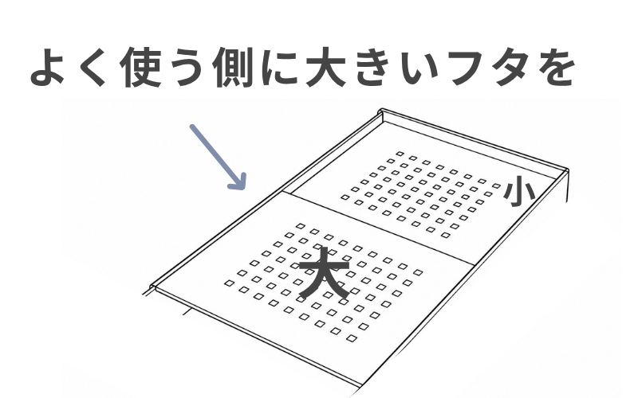
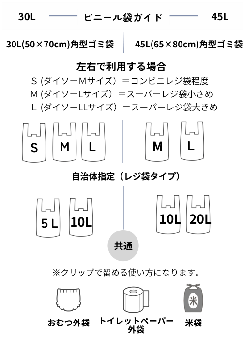

SKETTO / HOW TO
SKETTOの使い方
通気するゴミ箱「SKETTO」を、より快適にお使いいただくためのご案内です。
はじめに｜セット方法
01
底のすのこをセットする
すのこは、かまぼこ型の山を上にして、キャスターのネジが内側に収まるように底にセットしてください。

02
ゴミ袋をセットする
分別しない場合は、黒いストッパーにゴミ袋をチョイチョイと引っかけるだけです。
分別してお使いの場合は、動画を参考にしてください。
自治体指定の袋、市販のゴミ袋、レジ袋などをお使いいただけます。
ゴミ袋のセットの仕方いろいろ
動画準備中
03
フタを使う
フタは置くだけでセットできます。大きい方をよく使う側にすると便利です。

ニオイ抑制効果のために大事なこと
- ゴミ袋をフタで挟まず、通気を妨げないようにお使いください。
- ゴミ袋は一重でお使いください。それ以上は通気と排熱の妨げになります。
- 紙ごみも一緒に捨てると、余分な水分を吸収してくれます。
- 生ゴミを小さなビニール等に入れて捨てると、通気の効果が十分に得られません。気になる場合は新聞紙やチラシ（古紙）などでふんわり包み、空気が通る状態でそのままSKETTOに捨ててください。
- 魚や肉の内臓など、ニオイの強いものは十分に水を切り、古紙などに包んで捨ててください。ニオイが気になる場合は、さらに古紙で包むのもおすすめです。週2回程度のゴミ回収であれば対応できることが多いですが、長期間ご不在の場合は冷蔵・冷凍保存をおすすめします。
ゴミ袋ガイド
市販の角型ゴミ袋や自治体指定のレジ袋タイプなど、さまざまな袋をお使いいただけます。

角型ゴミ袋の目安
30L：50×70cm ／ 45L：65×80cm
左右で分けて使う場合の目安
30L：S・M・L ／ 45L：M・L
自治体指定のレジ袋タイプは、30Lが5L・10L、45Lが10L・20Lを目安にお使いいただけます。おむつの外袋、トイレットペーパーの外袋、米袋なども使用例です。自治体や袋の形状によって異なりますので、サイズをご確認ください。
ゴミ出しの際のコツ
- スリムなデザインのため、詰め込みすぎると取り出す際に袋が破れることがあります。余裕を持って取り出してください。
- ゴミ袋を取り出す際はスリムな楕円形に整えると、出し入れがスムーズになります。詳しくは動画もご覧ください。
開発者ケチエの使い方（ご参考）
ゴミ袋をセット → リビングの紙ごみを先に底に入れる（生ゴミの水分を吸収し、乾燥を助けます） → キッチンで使う → 収集日に8割程度で取り出す → 洗面所やほかの部屋のゴミを追加 → ゴミ出し → ゴミ袋をセット……を繰り返しています。
上記はあくまで使用例です。ご自身のお好みで使っていただけます。
取扱説明書
取扱説明書はこちら（準備中）